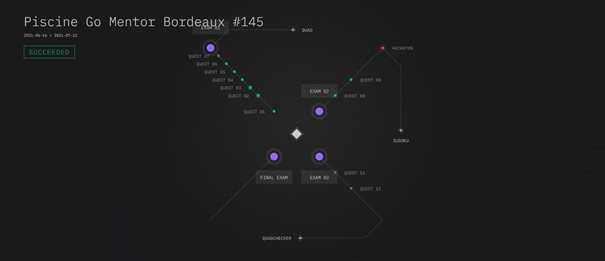
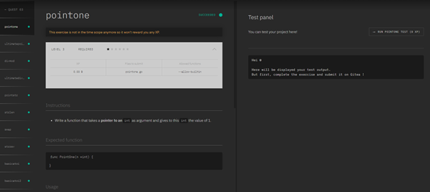

Ytrack

Qu'est-ce que Ytrack ?
Les exercices que j’ai faits pour me préparer à la rentrée des B1 informatique, ont été réalisé sur Ytrack.
Ytrack est une plateforme d’Ynov qui sert à faire faire aux étudiants une série d’exercices (avec une difficulté croissante) pour leur faire apprendre un langage de programmation. Lorsqu’ils réussissent un exercice, ils gagnent de l’expérience qui leur fait gagner des niveaux (cela permet de les motiver, et d’instaurer une sorte de compétition entre eux).
Fonctionnement
Pour être plus précis sur le fonctionnement de cette plateforme, on a ce que l’on appelle « une piscine », c’est l’équivalent du thème (le langage qui va être utilisé) des exercices. Par exemple, on peut avoir une piscine PHP, dans laquelle l’étudiant va apprendre le langage PHP.
Dans chaque piscine, il y a plusieurs « Quêtes », dans lesquelles il y a plusieurs exercices. Ces quêtes vont chacune avoir un nom qui fera souvent référence à la notion qui va être vue dans les exercices de la quête, par exemple « POO » ou « Fonctions ».
Les différents « Objets »
Sur cette image, on peut voir en haut à gauche le nom de la piscine. Puis on a ce que l’on appelle les « Branches ». Sur chaque branche, il y a plusieurs quêtes (représentées par les petits cercles gris ou vert), qui se déverrouillent en fonction du temps. Par exemple première quête jour 1, deuxième quête jour 2…
Il y a également les « Examen » (représentés par les gros cercles violets), ceux-ci servent à évaluer les étudiants à travers une série d’exercices qui reprennent les notions vues dans les quêtes précédentes.
Enfin il y a les « Raid » (représentés par les petits losanges), ceux-ci sont des exercices complexes et longs à réaliser. Ils sont à faire par groupes de 3 et sont à réaliser en 2 jours. Les étudiants passent ensuite une soutenance pour expliquer comment marche leur code.
Les exercices
Enfin nous allons aborder les exercices :
Voici une page d’exercice. Sur celle-ci on peut voir le nom de la quête (ici quest 3), le nom de l’exercice (ici pointone), tous les exercices de la quête (à gauche).
Dans le rectangle blanc, nous retrouvons des informations comme le nom du fichier à créer (ici pointone.go), le niveau de difficulté de l’exercice (représenté par des étoiles), l’expérience que l’exercice rapporte, et enfin si l’exercice est obligatoire ou non (ici REQUIRED, ce qui signifie qu’il est obligatoire).
Un peu plus bas, on peut retrouver un bloc « Instruction », dans lequel il y a les consignes de l’exercice. Les blocs que l’on va retrouver ensuite vont varier selon les piscines. Mais il y aura souvent un bloc « Output », qui va montrer le résultat attendu, et un bloc « Notions » qui va renvoyer vers de la documentation pour aider à faire l’exercice.
Pour voir Ytrack côté admin, cliquez ici.